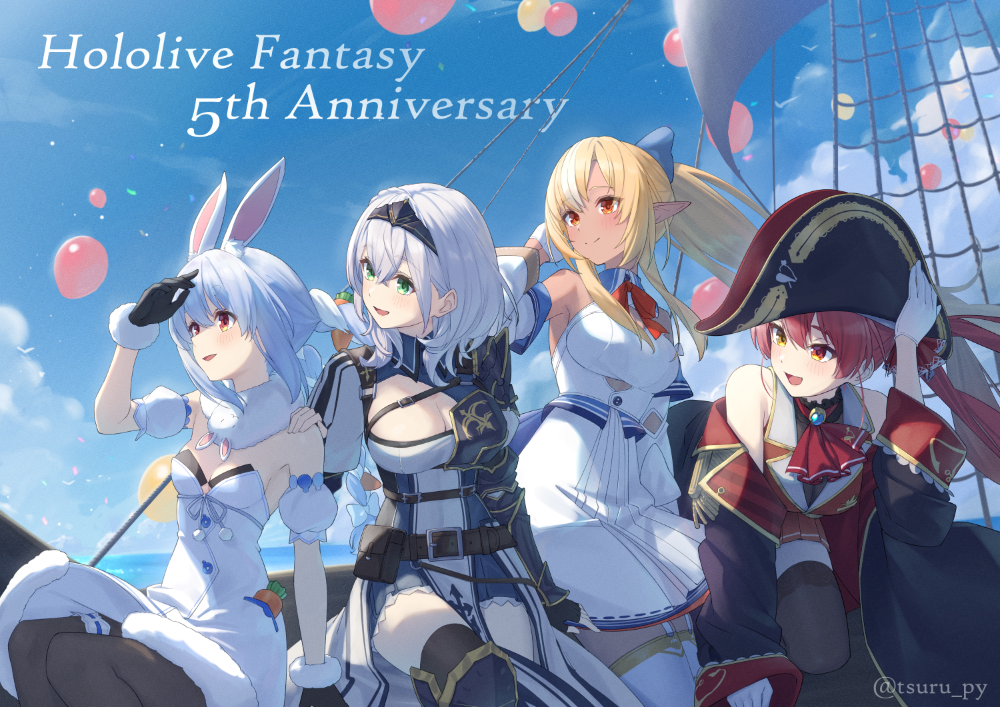

Hololive JP - Gen 3

兎田ぺこら or Usada Pekora is a vtuber from a company called Hololive, which is owned by CoverCorp.
She is a member of Hololive Fantasy Generation 1, and she is a rabbit. Known for her energetic personality
and mischievous antics, she often refers to her fans as "Nousagi" (meaning "playful rabbits"). Usada Pekora
streams a variety of content, including gaming, singing, and chatting, and has gained a massive following worldwide.
Her iconic laugh and unique catchphrases have made her a beloved figure in the vtuber community.
She is also known for her "Pekora" laugh, which is a high-pitched, cackling sound that she often makes during her streams.
She has a playful and mischievous personality, often teasing her viewers and fellow vtubers. Pekora is also known for her
love of carrots, which she often incorporates into her streams and merchandise. She has a strong bond with her fans,
often referring to them as "Nousagi".
Pekora has collaborated with many other vtubers, both within Hololive and outside of it. She has also participated
in various events and projects, including concerts and charity streams. Her popularity has led to numerous merchandise
collaborations, including figures, apparel, and accessories featuring her likeness.